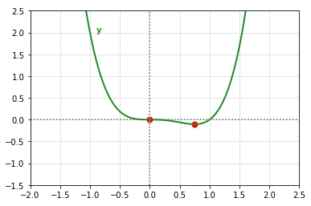
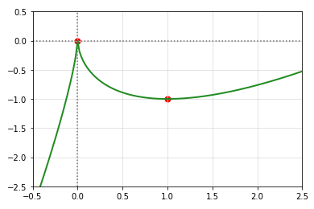
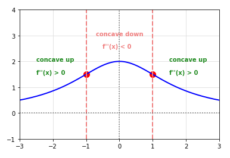
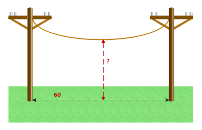

| PolarSPARC |
Introduction to Calculus - Part 4
| Bhaskar S | 03/27/2021 |
Differential Calculus
In Part 3, we covered additional rules of Differentiation, worked on few problems, introduced decreasing/increasing functions and critical numbers.
First-Derivative Test for Relative Extrema
The following are the definitions of Relative Extrema, for a given continuous function f(x), if f(x) is differentiable in the interval (a, b) and c is a critical number in the interval:
Relative Maximum
if \(f'(x)\) is positive to the left of x = c and negative to the right of x = c, then f(c) is the Relative Maximum
Relative Minimum
if \(f'(x)\) is negative to the left of x = c and positive to the right of x = c, then f(c) is the Relative Minimum
No Extrema
if \(f'(x)\) is EITHER negative on both the left and right of x = c OR positive on both the left and right of x = c, then f(c) is NOT a relative extrema
In other words, if a continuous function f(x) has a relative maximum or a relative minimum at x = c, then c is the Critical Number of the given function. That is, either \(f'(c)\) = 0 or undefined.
Let us look at an example now.
| Example-1 | Find the relative extrema for the function \(y = x^4 - x^3 \) | ||||||||
|---|---|---|---|---|---|---|---|---|---|
|
To determine the relative extrema, we first need to determine its derivative. \(y'\) = \(\Large{\frac{d}{dx}}\)\([x^4 - x^3]\) = \(4x^3 - 3x^2\) = \(x^2(4x - 3)\) We can infer \(y'\) is continuous at all points and is zero (0) at two points: x = 0 and \(x = \Large{\frac{3}{4}}\). These are the critical numbers of the given function y. The following graph is the illustration of the functions y (in green) and with the critical numbers as red dots:

Fig.1
The critical numbers of the function f(x) partition the domain of the function f(x) into intervals \((-\infty, 0)\), \((0, \Large{\frac{3}{4}}\normalsize{)}\), and \((\Large{\frac{3}{4}}, \normalsize{\infty})\) respectively. Now it is time to find the sign of the derivative function \(y'\) in each of the 3 domain intervals by picking a test number in each of the domain intervals.
RESULT: applying the first-derivative test to the above table, there is no relative extrema at x = 0 since the derivative is negative on the left and right. At x = \(\Large{\frac{3}{4}}\), we have the derivative as negative to the left and positive to the right and therefore we have a relative minimum. |
|||||||||
Let us look at another example.
| Example-2 | Find the relative extrema for the function \(y = 2x - 3x^{\frac{2}{3}} \) | ||||||||
|---|---|---|---|---|---|---|---|---|---|
|
To determine the relative extrema, we first need to determine its derivative. \(y'\) = \(\Large{\frac{d}{dx}}\)\([2x - 3x^{\frac{2}{3}}]\) = \(4 - 3.\Large{\frac{2}{3}}\).\(x^{\frac{2}{3}-1}\) = \(2(1 - \Large{\frac{1}{x^{\frac{1}{3}}}}\)\()\) = \(2\Large{\frac{(x^{\frac{1}{3}} - 1)}{x^{\frac{1}{3}}}}\) We can infer \(y'\) is continuous at all points and (a) is undefined at zero (0) and (b) zero (0) at x = 1. These are the critical numbers of the given function y. The following graph is the illustration of the functions y (in green) and with the critical numbers as red dots:

Fig.2
The critical numbers of the function f(x) partition the domain of the function f(x) into intervals \((-\infty, 0)\), \((0, 1)\), and \((1, \infty)\) respectively. Now it is time to find the sign of the derivative function \(y'\) in each of the 3 domain intervals by picking a test number in each of the domain intervals.
RESULT: applying the first-derivative test to the above table, we have a relative maximum at x = 0 since the derivative is negative on the left and positive on the right. Similarly, at x = 1, we have a relative minimum since the derivative is positive to the left and negative to the right. |
|||||||||
Let us look at one other example.
| Example-3 | The product of two positive numbers is 288. Minimize the sum of the second number and twice the first number | ||||||
|---|---|---|---|---|---|---|---|
|
Let x be the first number and y be the second number. Given xy = 288. We want to minimize the sum S = 2x + y. Rewriting the equation for S to depend on one variable (say x), \(S = 2x + \Large{\frac{288}{x}}\). Given that the numbers are positive, the domain if \(x \geq 0\). Next, we find the critical number(s) to help us identify the minimum value of S. To find the critical number(s), we need to find the derivative of S. That is \(S'\) = \(\Large{\frac{d}{dx}}\)\([2x - \Large{\frac{288}{x}}\)\(]\) = \(2 - \Large{\frac{288}{x^2}}\) To find the critical number(s), we set the derivative \(S' = 2 - \Large{\frac{288}{x^2}}\) = \(0\). That is, \(x^2 = 144\) or \(x = \pm12\). Since the domain is only positive numbers, we choose x = 12. The critical number x = 12 partitions the domain of the function S into intervals \((0, 12)\) and \((12, \infty)\) respectively. Now it is time to find the sign of the derivative function \(S'\) in each of the 2 domain intervals by picking a test number in each of the domain intervals.
RESULT: applying the first-derivative test to the above table, we have a relative minimum at x = 12, since the derivative is negative to the left and positive to the right. Therefore, the two numbers are x = 12 and y = 24. |
|||||||
Second-Derivative Test for Concavity
The following are the definitions of Concavity, for a given continuous function f(x) that is differentiable in the interval (a, b):
Concave Upwards
if \(f'(x)\) is INCREASING in the interval a < x < b (the slope is increasing), then the graph of f(x) is Concave Upwards
Concave Downwards
if \(f'(x)\) is DECREASING in the interval a < x < b (the slope is decreasing), then the graph of f(x) is Concave Downwards
Let us look at an example.
| Example-4 | Find the intervals for which the graph of the function f(x) = \(\Large{\frac{3}{x^2 + 3}}\) is either concave upward and/or concave downward ? | ||||||||||||||||
|---|---|---|---|---|---|---|---|---|---|---|---|---|---|---|---|---|---|
|
The given equation for the function is \(f(x) = \Large{\frac{3}{x^2 + 3}}\). Given \(f(x) = \Large{\frac{3}{x^2 + 3}}\), the first derivative of \(f(x) = 6.(x^2 + 3)^{-1}\) using the chain rule is \(f'(x) = 6.(-1).(2x).(x^2 + 3)^{-2}\) = \(\Large{\frac{-12x}{(x^2 + 3)^2}}\). The second derivative \(f''(x)\) can be found using the quotient rule. Therefore, \(f''(x) = \Large{\frac{(x^2 + 3)^2(-12) - (-12x)(2)(2x)(x^2 +3)}{(x^2 + 3)^4}}\) = \(\Large{\frac{-12(x^2 + 3) + 48x^2}{(x^2 + 3)^3}}\) = \(\Large{\frac{36(x^2 - 1)}{(x^2 + 3)^3}}\). From the above equation for \(f''(x)\), we can infer the second derivation is defined for all real numbers. Also, for x = -1 or 1, \(f''(x) = 0\). Therefore, the domain of the function \(f''(x)\) can be divided into intervals \((-\infty, -1)\), \(-1, 1\), and \((1, \infty)\) respectively. Now it is time to find if the second derivative function \(f''(x)\) is increasing or decreasing in each of the 3 domain intervals by picking a test number in each of the intervals.
The following illustration shows the conclusion on the concavity of the function f(x):

Fig.3
|
|||||||||||||||||
The second derivative of a function f(x) can also be used to determine the relative minimum or relative maximum of the function. If \(f'(c) = 0\) and if \(f''(c)\) exists for the interval that contains the critical number c, then the following steps summarize of the second derivative test:
Relative Minimum :: if \(f''(c) \gt 0\), then f(c) is the relative minimum
Relative Maximum :: if \(f''(c) \lt 0\), then f(c) is the relative maximum
If \(f''(c) = 0\), then the test fails and one can resort to using the first derivative test.
Exponential Functions
Exponential Functions are typically used to model the growth a some quantity that is not restricted. Examples include growth of a population growth, radioactive decay, etc
If \(a > 0\) and \(a \neq 1\), then the Exponential Function with base a is represented as \(f(x) = a^x\), where x is the Exponent.
If a and b are positive numbers, then following are some of the properties of exponents
\(a^0 = 1\)
\(a^x.a^y = a^{x+y}\)
\(\Large{\frac{a^x}{a^y}}\) = \(a^{x-y}\)
\((a^x)^y = a^{xy}\)
\((ab)^x = a^x.b^x\)
\(\Large{(\frac{a}{b})^x}\) = \(\Large{\frac{a^x}{b^x}}\)
\(a^{-x}\) = \(\Large{\frac{1}{a^x}}\)
The following illustration shows the graphs for exponential functions \(y = 2^x\) in blue and \(y = 3^x\) in violet:
The natural irrational number e which is defined as the constant \(\approx 2.71828182846...\) is typically used at the base of the exponential function.
Mathematically, the irrational number e is defined as follows:
\(\lim_{x \to 0} (1 + x)^{\Large{\frac{1}{x}}}\)\( = e\)
The following illustration shows the graph for exponential function \(y = e^x\):
Let us look at an example now.
| Example-5 | A bacterial culture is growing according to the growth model \(y = \Large{\frac{1.25}{1 + 0.25e^{-0.4t}}}\), where \(t \geq 0\) is the time (in hours) and \(y\) is the culture weight (in grams). What is the weight of the culture after 10 hours ? Also, what is the limit of the model as t increases without bound ? |
|---|---|
|
(a) The weight of the culture after \(t = 10\) hours, \(y = \Large{\frac{1.25}{1 + 0.25e^{-0.4(10)}}}\) RESULT: The weight \(y \approx 1.244\) grams (b) The limit of the model as t increases without bound (to \(\infty\)) is \(\lim_{t \to \infty} \Large{\frac{1.25}{1 + 0.25e^{-0.4t}}}\) = \(\lim_{t \to \infty} \Large{\frac{1.25}{1 + \frac{0.25}{e^{0.4t}}}}\) As \(t \rightarrow \infty\), the term \(e^{0.4t}\) gets very large. This implies \(\Large{\frac{0.25}{e^{0.4t}}}\) will approach zero (0). Therefore, \(y = \Large{\frac{1.25}{1 + 0}}\) = 1.25 RESULT: The weight of the culture approaches 1.25 as t increases without bound. |
|
Let us look at another example.
| Example-6 | The balance amount A on investing principal P at an annual rate r that it compounded n times is given by the formula \(A = P\Large{(1 + \frac{r}{n})^n}\). What is the limit of the balanace A as n increases without bound ? |
|---|---|
|
The balance amount A as n (number of interest compound) increases without bound (to \(\infty\)) is \(\lim_{n \to \infty} P\Large{(1 + \frac{r}{n})^n}\) = \(\lim_{n \to \infty} P\Large{[(1 + \frac{r}{n})^{\frac{n}{r}}]^r}\) Let \(x = \Large{\frac{r}{n}}\), then \(\lim_{x \to 0} P(1 + x)^{\frac{1}{x}}\) = \(P[\lim_{x \to 0}(1 + x)^{\frac{1}{x}}]\) We know \(\lim_{x \to 0} (1 + x)^{\Large{\frac{1}{x}}}\)\( = e\). RESULT: The limit of the balanace A as n increases without bound is \(lim_{n \to \infty} A = Pe^r\). |
|
Derivatives of Exponential Functions
The following are the rules of derivatives for natural exponential functions:
\(\Large{\frac{d}{dx}}\)\([e^x]\) = \(e^x\)
\(\Large{\frac{d}{dx}}\)\([e^u]\) = \(e^u.\Large{\frac{du}{dx}}\)
The following are the properties of natural exponential functions:
The slope of the tangent line at (0, 1) is exactly 1. That is, \(f'(0) = e^0 = 1\)
The slope of the tangent line at (1, e) is exactly e. That is, \(f'(1) = e^1 = e\)
Let us look at an example now.
| Example-7 | Find the derivative of \(f(x) = e^{-3x^2}\) |
|---|---|
|
We need to use the chain rule to find the derivative of f(x). Let \(u = -3x^2\). Then, \(f(x) = e^{-3x^2} = e^u\). We know \(\Large{\frac{d}{dx}}\)\([e^u]\) = \(e^u.\Large{\frac{du}{dx}}\). Therefore, \(f'(x) = e^u.\Large{\frac{du}{dx}}\) = \(e^u.(-3)(2)x^{2 - 1} = -6x.e^u = -6xe^{-3x^2}\) RESULT: The derivative of f(x) is \(-6xe^{-3x^2}\). |
|
Let us look at another example.
| Example-8 | The function \(y = 30(e^{\frac{x}{60}} + e^{\frac{-x}{60}})\), where \(-30 \leq x \leq 30\), models the shape of the telephone wire that is hung between two poles that are 60 feet apart. What is the height (from the ground) of the lowest point on the telephone wire ? | ||||||||
|---|---|---|---|---|---|---|---|---|---|
|
The following diagram provides a pictorial illustration:

Fig.6
Given the domain of x is the closed interval \([-30, 30]\). To find the lowest (or minimum) point on the telephone wire, we need to find the first-derivative of the function and find the critical number. Let \(u = \frac{x}{60}\). Therefore, \(y' = \Large{\frac{d}{dx}}\)[\(30(e^u + e^{-u})\)] = \(30[e^u.\frac{du}{dx} + e^{-u}.\frac{du}{dx}]\) = \(30[e^u.(\frac{1}{60}) + e^{-u}.(-\frac{1}{60})]\) = \(30[\frac{e^u}{60} - \frac{e^{-u}}{60}]\) = \(\frac{1}{2}(e^u - e^{-u})\) = \(\frac{1}{2}(e^{\frac{x}{60}} - e^{-\frac{x}{60}})\) To find the critical number, we set \(y' = 0\). That is, \(\frac{1}{2}(e^{\frac{x}{60}} - e^{-\frac{x}{60}}) = 0\) That is \(e^{\frac{x}{60}} - e^{-\frac{x}{60}} = 0\). OR \(\frac{x}{60} = -\frac{x}{60}\). OR \(x = -x\). OR \(2x = 0\). This implies \(x = 0\). The height the telephone wire (from the ground) can be computed by substituting \(x = -30\), \(x = 0\), and \(x = 30\) in the function for \(y\) to figure the lowest (minimum) point. The following are the three values:
RESULT: The height from the ground at the lowest point in the telephone wire is 60 feet. |
|||||||||
References